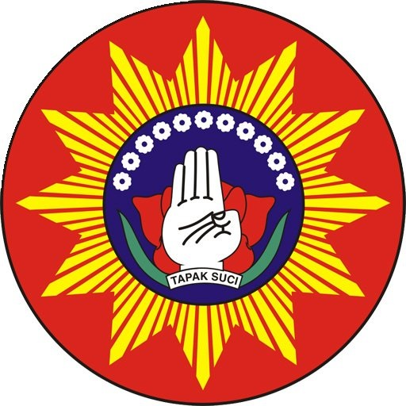

Pantau fisik, teknik, dan kehadiran latihan siswa dalam satu aplikasi.
Masuk untuk melanjutkan ke dashboard.
Belum punya akun siswa? Daftar di sini
Isi data diri dengan benar, lalu login menggunakan username & password.
Sudah punya akun? Kembali ke Login